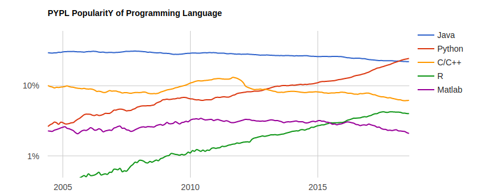
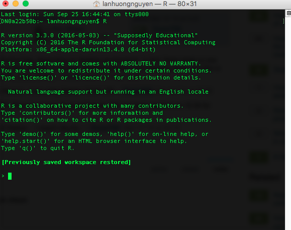
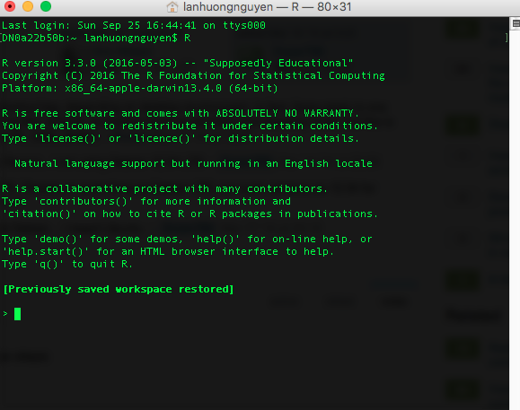
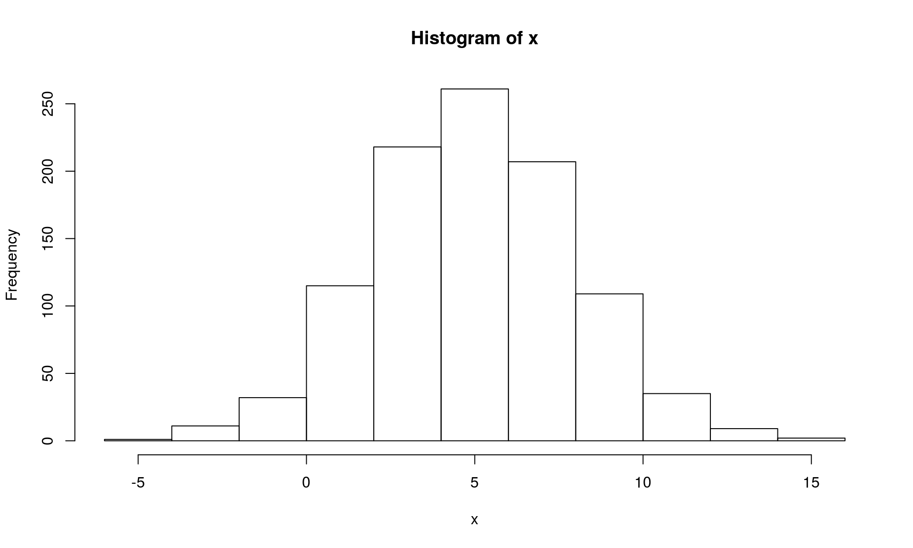

Lecture 1: Introduction to R
CME/STATS 195
Lan Huong Nguyen
September 27, 2018
Contents
Course Objectives & Organization
The R language
Setting up R environment
Basics of coding in R
Course Objectives & Organization
Course Logistics
CME/STATS 195 will run for 4 weeks: 09/27-10/23/2018
- Lectures: Tue, Thu 12:00 PM - 1:20 PM, Building 200 room 034
- Office hours: Mon 4PM, Huang (Basement) Student Area
- Class website: https://cme195.github.io/
- Homework submission: https://canvas.stanford.edu/
- Questions/Communication: https://canvas.stanford.edu/
Grading (Satisfactory/No Credit):
- Homework assignments (40%)
- (Group) final project (40%)
- Participation (20%)
Assignments
Homework:
- work individually
- due the 3rd week of class
Final project:
- work in groups up to 4 students
- title and abstract due the 3rd week of class
- final report and R code due one week after the last class
- details can be found on class website
Late day policy:
- no later than 5 days post due date; 10% penalty per day
Pre-requisites and expectations
No formal pre-requisites, but you should have some prior knowledge of statistics and some programming experience.
The goal of this course is for you to:
- familiarize yourself with R
- learn how to do interesting and practical things quickly in R
- start using R as a powerful tool for data science
We will NOT learn:
- computer programming
- statistics
- big data
This is a short course, so you will not learn everything about R.
Topics Covered
R Basics: data types and structures, variable assignment etc.
R as a programming language: syntax, flow control, iteration, functions.
Importing and tidying data.
Processing and transforming data with
dplyr.Visualizing data with
ggplot2.Exploratory data analysis (EDA)
Elements of statics: modeling, predicting and testing.
Some R tools for supervised & unsupervised learning.
Generating R Markdown reports for efficient communication.
The R language
What is R?
R was created by Rob Gentleman and Ross Ihaka in 1994; it is based on the S language developed at Bell Labs by John Chambers (Stanford Statistics).
It is an open-source language and environment for statistical computing and graphics.

- R offers:
- A simple and effective programming language.
- A data handling and storage facility.
- A suite of libraries for matrix computations.
- A large collection of tools for data analysis.
- Facilities for generating high-quality graphics and data display.
- R is highly extensible, but remains a fully planned and coherent system, rather than an incremental accumulation of specific and inflexible tools.
Who uses R?
Traditionally, academics and researchers. However, recently R has expanded also to industry and enterprise market. Worldwide usage on log-scale:

Source: http://pypl.github.io/PYPL.html
The PYPL Index is created by analyzing how often language tutorials are searched on Google (generated using raw data from Google Trends).
Why should you learn R?
Pros:
- Open source and cross-platform.
- Created with statistics and data in mind; new ideas and methods in statistics usually appear in R first.
- Provides a wide range of high-quality packages for data analysis and visualization.
- Arguably, the most commonly used language by data scientists
Cons:
- Performance/Scalability: low speed, poor memory management.
- Some packages are low-quality and provide no support.
- A unconventional syntax and a few unusual features compared to other languages.
A few alternatives to R:
- Python: fastest growing, general-purpose programming, with data science libraries.
- SAS: used for statistical analysis; commercial and expensive, slower development.
- SQL: designed for managing data held in a relational database management system.
- MATLAB: proprietary, mostly for numerical computing, and matrix computations.
What makes R good?
- R is an interpreted language, i.e. programs do not need to be compiled into machine-language instructions.
- R is object oriented, i.e. it can be extended to include non-standard data structures (objects). A generic function can act differently depending on what objects you passe to it.
- R supports matrix arithmetics.
- R packages can generate publication-quality plots, and interactive graphics.
- Many user-created R packages contain implementations of cutting edge statistics methods.
What makes R good?
As of September 29, there are 13,083 packages on CRAN, 1,560 on Bioconductor, and many others on github)

“Textbook”
We will use R for Data Science as a primary reference.

Other useful resources for learning R
R in a nutshell and introductory book by Joseph Adler - R tutorial (https://www.tutorialspoint.com/r/r_packages.htm)
Advanced R book by Hadley Wickham for intermediate programmers (http://adv-r.had.co.nz/Introduction.html)
swirlR-package for interactive learning for beginners (http://swirlstats.com/)Data Campcourses for data science, R, python and more (https://www.datacamp.com/courses)
Setting up an R environment
Installing R
R is open sources and cross platform (Linux, Mac, Windows).
To download it, go to the Comprehensive R Archive Network CRAN website. Download the latest version for your OS and follow the instructions.
Each year a new version of R is available, and 2-3 minor releases. You should update your software regularly.
Running R code
Interpreter mode:
- open a terminal and launch R by calling “R” (or open an R console).
- type R commands interactively in the command line, pressing
Enterto execute. - use
q()to quit R.
Scripting mode:
- write a text file containing all commands you want to run
- save your script as an R script file (e.g. “myscript.R”)
- execute your code from the terminal by calling “Rscript myscript.R”
 

R editors
The most popular R editors are:
- Rstudio, an integrated development environment (IDE) for R.
- Emacs, a free, powerful, customizable editor for many languages.
In this class, we will use RStudio, as it is more user-friendly.
Installing RStudio
RStudio is open-source and cross-platform (Linux, Mac, Windows).
Download and install the latest version for your OS from the official website.

RStudio window

RStudio preferences

RStudio layout

RStudio apprearance

More on RStudio cuztomization can be found here
R document types

R document types
R Script a text file containing R commands stored together.
R Markdown files can generate high quality reports contatining notes, code and code outputs. Python and bash code can also be executed.
R Notebook is an R Markdown document with chunks that can be executed independently and interactively, with output visible immediately beneath the input.
R presentation let’s you author slides that make use of R code and LaTeX equations as straightforward as possible.
R Sweave enables the embedding of R code within LaTeX documents.
Other documents
R packages
R packages are a collection of R functions, complied code and sample data.
They are stored under a directory called library in the R environment.
Some packages are installed by default during R installation and are always automatically loaded at the beginning of an R session.
- Additional packages by the user from:
- CRAN The first and biggest R repository.
- Bioconductor: Bioinformatics packages for the analysis of biological data.
- github: packages under development
Installing R packages from different repositories:
- From CRAN:
# install.packages("Package Name"), e.g.
install.packages("glmnet") - From Bioconductor:
# First, load Bioconductor script. You need to have an R version >=3.3.0.
source("https://bioconductor.org/biocLite.R")
# Then you can install packages with: biocLite("Package Name"), e.g.
biocLite("limma") - From github:
# You need to first install a package "devtools" from CRAN
install.packages("devtools")
# Load the "devtools" package
library(devtools)
# Then you can install a package from some user's reporsitory, e.g.
install_github("twitter/AnomalyDetection")
# or using install_git("url"), e.g.
install_git("https://github.com/twitter/AnomalyDetection") Where are R packages stored?
# Get library locations containing R packages
.libPaths()## [1] "/home/lanhuong/R/x86_64-pc-linux-gnu-library/3.4" "/usr/local/lib/R/site-library" "/usr/lib/R/site-library" "/usr/lib/R/library"# Get the info on all the packages installed
installed.packages()[1:5, 1:3]## Package LibPath Version
## abind "abind" "/home/lanhuong/R/x86_64-pc-linux-gnu-library/3.4" "1.4-5"
## acepack "acepack" "/home/lanhuong/R/x86_64-pc-linux-gnu-library/3.4" "1.4.1"
## adaptiveGPCA "adaptiveGPCA" "/home/lanhuong/R/x86_64-pc-linux-gnu-library/3.4" "0.1.1"
## ade4 "ade4" "/home/lanhuong/R/x86_64-pc-linux-gnu-library/3.4" "1.7-11"
## ADGofTest "ADGofTest" "/home/lanhuong/R/x86_64-pc-linux-gnu-library/3.4" "0.3"# Get all packages currently loaded in the R environment
search() ## [1] ".GlobalEnv" "package:stats" "package:graphics" "package:grDevices" "package:utils" "package:datasets" "package:methods" "Autoloads" "package:base"Basics of coding in R
R as a calculator
- R can be used as a calculator, e.g.
23 + sin(pi/2) ## [1] 24abs(-10) + (17-3)^4## [1] 384264 * exp(10) + sqrt(2) ## [1] 88107.28Intuitive arithmetic operators: addition (
+), subtraction (-), multiplication (*), division: (/), exponentiation: (^), modulus: (%%)Built-in constants:
pi, LETTERS, letters, month.abb, month.name
Variables
- Variables are objects used to store various information.
- Variables are nothing but reserved memory locations for storing values.
- In contrast to other programming languages like C or java, in R the variables are NOT declared as some data type/class (e.g. vectors, lists, data-frames).
- When variables are assigned with R-Objects, the data type of the R-object becomes the data type of the variable.
Variable assignment
Variable assignment can be done using the following operators: =, <-, ->:
# Assignment using equal operator.
var.1 = 34759
# Assignment using leftward operator.
var.2 <-"learn R"
#Assignment using rightward operator.
TRUE -> var.3 The values of the variables can be printed with print() function, or cat().
print(var.1) ## [1] 34759cat("var.2 is ", var.2)## var.2 is learn Rcat("var.3 is ", var.3 ,"\n") ## var.3 is TRUENaming variables
Variable names must start with a letter, and can only contain:
- letters
- numbers
- the character _
- the character .
a <- 0
first.variable <- 1
SecondVariable <- 2
variable_2 <- 1 + first.variable
very_long_name.3 <- 4Some words are reserved in R and cannot be used as object names:
Infand-Infwhich respectively stand for positive and negative infinity, R will return this when the value is too big, e.g.2^1024NULLdenotes a null object. Often used as undeclared function argument.NArepresents a missing value (“Not Available”).NaNmeans “Not a Number”. R will return this when a computation is undefined, e.g.0/0.
Data types
Values in R are limited to only 6 atomic classes:
- Logical:
TRUE/FALSEorT/F - Numeric:
12.4, 30, 2, 1009, 3.141593 - Integer:
2L, 34L, -21L, 0L - Complex:
3 + 2i, -10 - 4i - Character:
'a', '23.5', "good", "Hello world!", "TRUE" - Raw (holding raw bytes):
as.raw(2), charToRaw("Hello")
Objects can have different structures based on atomic class and dimensions:
| Dimensions | Homogeneous | Heterogeneous |
|---|---|---|
| 1d | vector | list |
| 2d | matrix | data.frame |
| nd | array |
R also supports more complicated objects built upon these.
Variable class
R is a dynamically typed language, which means that we can change a variable’s data type of the same variable again and again when using it in a program.
x <- "Hello"
cat("The class of x is", class(x),"\n")## The class of x is characterx <- 34.5
cat(" Now the class of x is ", class(x),"\n")## Now the class of x is numericx <- 27L
cat(" Next the class of x becomes ", class(x),"\n") ## Next the class of x becomes integerYou can see what variables are currently available in the workspace by calling
print(ls()) ## [1] "a" "first.variable" "SecondVariable" "var.1" "var.2" "var.3" "variable_2" "very_long_name.3" "x"Vectors
Vectors are the simplest R data objects; there are no scalars in R.
# Create a vector with "combine"
x1 <- c(1, 3, 7:12)
x2 <- c('apple', 'banana', 'watermelon')
# Look at content of a variable:
x1## [1] 1 3 7 8 9 10 11 12print(x2)## [1] "apple" "banana" "watermelon"# Including in () also prints content
(x3 <- 1:5)## [1] 1 2 3 4 5# If mixed, on-character values are coerced
# to character type
(s <- c('apple', 123.56, 5, TRUE)) ## [1] "apple" "123.56" "5" "TRUE"# Generate numerical sequence, e.g. sequence
# from 5 to 7 with 0.4 increment.
(v <- seq(5, 7, by = 0.4))## [1] 5.0 5.4 5.8 6.2 6.6 7.0Vector indexing
Elements of a vector can be accessed using indexing, with square brackets,
[].Unlike in many languages, in R indexing starts with
1.Using negative integer value indices drops corresponding element of the vector.
Logical indexing (
TRUE/FALSE) is allowed.
days <- c("Sun","Mon","Tue","Wed","Thurs","Fri","Sat")
(today <- days[5])## [1] "Thurs"# Accessing vector elements using position.
(weekend.days <- days[c(1, 7)])## [1] "Sun" "Sat"# Accessing vector elements using negative indexing.
(week.days <- days[c(-1,-7)])## [1] "Mon" "Tue" "Wed" "Thurs" "Fri"# Accessing vector elements using logical indexing.
(birthday <- days[c(F, F, F, F, T, F, F)])## [1] "Thurs"Logical operations
# Comparisons (==,!=,>,>=,<,<=)
1 == 2## [1] FALSE# Check whether number is even
# (%% is the modulus)
(5 %% 2) == 0## [1] FALSE# Logical indexing
x <- seq(1,10)
x[(x%%2) == 0]## [1] 2 4 6 8 10# Element-wise comparison
c(1,2,3) > c(3,2,1)## [1] FALSE FALSE TRUE# Check whether numbers are even,
# one by one
(seq(1,4) %% 2) == 0## [1] FALSE TRUE FALSE TRUE# Logical indexing
x <- seq(1,10)
x[x>=5]## [1] 5 6 7 8 9 10Vector arithmetics
Two vectors of same length can be added, subtracted, multiplied or divided. Vectors can be concatenated with combine function c().
# Create two vectors.
v1 <- c(1,4,7,3,8,15)
v2 <- c(12,9,4,11,0,8)
# Vector addition.
(vec.sum <- v1+v2)## [1] 13 13 11 14 8 23# Vector subtraction.
(vec.difference <- v1-v2)## [1] -11 -5 3 -8 8 7# Vector multiplication.
(vec.product <- v1*v2)## [1] 12 36 28 33 0 120# Vector division.
(vec.ratio <- v1/v2)## [1] 0.08333333 0.44444444 1.75000000 0.27272727 Inf 1.87500000# Vector concatenation
vec.concat <- c(v1, v2)
# Size of vector
length(vec.concat)## [1] 12Recycling
- Recycling is an automatic lengthening of vectors in certain settings.
# Element-wise multiplication
v1 <- c(1,2,3,4,5,6,7,8,9,10)
v1 * 2## [1] 2 4 6 8 10 12 14 16 18 20- When two vectors of different lengths, R will repeat the shorter vector until the length of the longer vector is reached.
# Element-wise multiplication
v1 * c(1,2)## [1] 1 4 3 8 5 12 7 16 9 20v1 + c(3, 7, 10)## [1] 4 9 13 7 12 16 10 15 19 13Note: a warning is not an error. It only informs you that your code continued to run, but perhaps it did not work as you intended.
Matrices
Matrices in R are objects with homogeneous elements (of the same type), arranged in a 2D rectangular layout. A matrix can be created with a function:
matrix(data, nrow, ncol, byrow, dimnames)
where:
datais the input vector with elements of the matrix.nrowis the number of rows to be cratedbyrowis a logical value. IfFALSE(the default) the matrix is filled by columns, otherwise the matrix is filled by rows.dimnamesisNULLor a list of length 2 giving the row and column names respectively
# Elements are arranged sequentially by column.
(N <- matrix(seq(1,20), nrow = 4, byrow = FALSE))## [,1] [,2] [,3] [,4] [,5]
## [1,] 1 5 9 13 17
## [2,] 2 6 10 14 18
## [3,] 3 7 11 15 19
## [4,] 4 8 12 16 20# Elements are arranged sequentially by row.
(M <- matrix(seq(1,20), nrow = 5, byrow = TRUE))## [,1] [,2] [,3] [,4]
## [1,] 1 2 3 4
## [2,] 5 6 7 8
## [3,] 9 10 11 12
## [4,] 13 14 15 16
## [5,] 17 18 19 20Accessing Elements of a Matrix
# Define the column and row names.
rownames <- c("row1", "row2", "row3")
colnames <- c("col1", "col2", "col3", "col4", "col5")
(P <- matrix(c(5:19), nrow = 3, byrow = TRUE,
dimnames = list(rownames, colnames))) ## col1 col2 col3 col4 col5
## row1 5 6 7 8 9
## row2 10 11 12 13 14
## row3 15 16 17 18 19P[2, 5] # the element in 2nd row and 5th column. ## [1] 14P[2, ] # the 2nd row. ## col1 col2 col3 col4 col5
## 10 11 12 13 14P[, 3] # the 3rd column. ## row1 row2 row3
## 7 12 17P[c(3,2), ] # the 3rd and 2nd row. ## col1 col2 col3 col4 col5
## row3 15 16 17 18 19
## row2 10 11 12 13 14P[, c(3, 1)] # the 3rd and 1st column. ## col3 col1
## row1 7 5
## row2 12 10
## row3 17 15P[1:2, 3:5] # Subset 1:2 row 3:5 column ## col3 col4 col5
## row1 7 8 9
## row2 12 13 14Matrix Computations
Matrix addition and subtraction needs matrices of same dimensions:
# Create two 2x3 matrices.
(A <- matrix(c(3, 9, -1, 4, 2, 6), nrow = 2)) ## [,1] [,2] [,3]
## [1,] 3 -1 2
## [2,] 9 4 6(B <- matrix(c(5, 2, 0, 9, 3, 4), nrow = 2))## [,1] [,2] [,3]
## [1,] 5 0 3
## [2,] 2 9 4A + B # Element-wise sum; (A - B) difference## [,1] [,2] [,3]
## [1,] 8 -1 5
## [2,] 11 13 10A * B # Element-wise multiplication## [,1] [,2] [,3]
## [1,] 15 0 6
## [2,] 18 36 24A / B # Element-wise division## [,1] [,2] [,3]
## [1,] 0.6 -Inf 0.6666667
## [2,] 4.5 0.4444444 1.5000000t(A) # Matrix transpose## [,1] [,2]
## [1,] 3 9
## [2,] -1 4
## [3,] 2 6Matrix Algebra
True matrix multiplication A x B, with
# A is (2 x 3) and t(B) is (3 x 2)
A %*% t(B) # (2 x 2)-matrix## [,1] [,2]
## [1,] 21 5
## [2,] 63 78# t(A) is (3 x 2) and B is (2 x 3)
t(A) %*% B # (3 x 3)-matrix## [,1] [,2] [,3]
## [1,] 33 81 45
## [2,] 3 36 13
## [3,] 22 54 30More on matrix algebra here
Arrays
- In R, arrays are data objects with more than two dimensions, e.g. a (4x3x2)-array has 2 tables of size 4 rows by 3 columns.
- Arrays can store only one data type and are created using
array(). - Accessing and subsetting elements of an arrays is similar to accessing elements of a matrix.
row.names <- c("ROW1","ROW2","ROW3", "ROW4")
column.names <- c("COL1","COL2","COL3")
matrix.names <- c("Matrix1","Matrix2")
(arr <- array(
seq(1, 24), dim = c(4,3,2),
dimnames = list(row.names, column.names,
matrix.names))) ## , , Matrix1
##
## COL1 COL2 COL3
## ROW1 1 5 9
## ROW2 2 6 10
## ROW3 3 7 11
## ROW4 4 8 12
##
## , , Matrix2
##
## COL1 COL2 COL3
## ROW1 13 17 21
## ROW2 14 18 22
## ROW3 15 19 23
## ROW4 16 20 24Lists
Lists can contain elements of different types e.g. numbers, strings, vectors and/or another list. List is created using list() function.
# Unnamed list
v <- c("Jan","Feb","Mar")
M <- matrix(c(1,2,3,4),nrow=2)
lst <- list("green", 12.3)
(u.list <- list(v, M, lst))## [[1]]
## [1] "Jan" "Feb" "Mar"
##
## [[2]]
## [,1] [,2]
## [1,] 1 3
## [2,] 2 4
##
## [[3]]
## [[3]][[1]]
## [1] "green"
##
## [[3]][[2]]
## [1] 12.3# Access 2nd element
u.list[[2]]## [,1] [,2]
## [1,] 1 3
## [2,] 2 4# Named list
(n.list <- list(
first = "Jane", last = "Doe",
gender = "Female", yearOfBirth = 1990)) ## $first
## [1] "Jane"
##
## $last
## [1] "Doe"
##
## $gender
## [1] "Female"
##
## $yearOfBirth
## [1] 1990# Access 3rd element
n.list[[3]]## [1] "Female"# Access "yearOfBirth" element
n.list$yearOfBirth## [1] 1990Data-frames
A data frame is a table or a 2D array-like structure, whose:
- Columns can store data of different types e.g. numeric, character etc.
- Each column must contain the same number of data items.
- The column names should be non-empty.
- The row names should be unique.
# Create the data frame.
employees <- data.frame(
row.names = c("E1", "E2", "E3","E4", "E5"),
name = c("Rick","Dan","Michelle","Ryan","Gary"),
salary = c(623.3,515.2,611.0,729.0,843.25),
start_date = as.Date(c("2012-01-01", "2013-09-23", "2014-11-15", "2014-05-11", "2015-03-27")),
stringsAsFactors = FALSE )
# Print the data frame.
employees## name salary start_date
## E1 Rick 623.30 2012-01-01
## E2 Dan 515.20 2013-09-23
## E3 Michelle 611.00 2014-11-15
## E4 Ryan 729.00 2014-05-11
## E5 Gary 843.25 2015-03-27Useful functions for data-frames
# Get the structure of the data frame.
str(employees) ## 'data.frame': 5 obs. of 3 variables:
## $ name : chr "Rick" "Dan" "Michelle" "Ryan" ...
## $ salary : num 623 515 611 729 843
## $ start_date: Date, format: "2012-01-01" "2013-09-23" "2014-11-15" "2014-05-11" ...# Print first few rows of the data frame.
head(employees, 2) ## name salary start_date
## E1 Rick 623.3 2012-01-01
## E2 Dan 515.2 2013-09-23# Print statistical summary of the data frame.
summary(employees)## name salary start_date
## Length:5 Min. :515.2 Min. :2012-01-01
## Class :character 1st Qu.:611.0 1st Qu.:2013-09-23
## Mode :character Median :623.3 Median :2014-05-11
## Mean :664.4 Mean :2014-01-14
## 3rd Qu.:729.0 3rd Qu.:2014-11-15
## Max. :843.2 Max. :2015-03-27Subsetting data-frames
- We can extract specific columns:
# using column names.
employees$name
employees[, c("name", "salary")]
# # or using integer indexing
# employees[, 1]
# employees[, c(1, 2)]## [1] "Rick" "Dan" "Michelle" "Ryan" "Gary"## name salary
## E1 Rick 623.30
## E2 Dan 515.20
## E3 Michelle 611.00
## E4 Ryan 729.00
## E5 Gary 843.25- We can extract specific rows:
# using row names.
employees["E1",]
employees[c("E2", "E3"), ]
# using integer indexing
employees[1, ]
employees[c(2, 3), ]## name salary start_date
## E1 Rick 623.3 2012-01-01## name salary start_date
## E2 Dan 515.2 2013-09-23
## E3 Michelle 611.0 2014-11-15Adding data to data-frames
- Add a new column using assignment operator:
# Add the "dept" coulmn.
employees$dept <-
c("IT","Operations","IT","HR","Finance")
employees## name salary start_date dept
## E1 Rick 623.30 2012-01-01 IT
## E2 Dan 515.20 2013-09-23 Operations
## E3 Michelle 611.00 2014-11-15 IT
## E4 Ryan 729.00 2014-05-11 HR
## E5 Gary 843.25 2015-03-27 Finance- Adding a new row using
rbind()function:
# Create the second data frame
new.employees <- data.frame(
row.names = paste0("E", 6:8),
name = c("Rasmi","Pranab","Tusar"),
salary = c(578.0,722.5,632.8),
start_date = as.Date(c("2013-05-21","2013-07-30","2014-06-17")),
dept = c("IT","Operations","Fianance"),
stringsAsFactors = FALSE )
# Concatenate two data frames.
(all.employees <- rbind(employees, new.employees)) ## name salary start_date dept
## E1 Rick 623.30 2012-01-01 IT
## E2 Dan 515.20 2013-09-23 Operations
## E3 Michelle 611.00 2014-11-15 IT
## E4 Ryan 729.00 2014-05-11 HR
## E5 Gary 843.25 2015-03-27 Finance
## E6 Rasmi 578.00 2013-05-21 IT
## E7 Pranab 722.50 2013-07-30 Operations
## E8 Tusar 632.80 2014-06-17 FiananceFactors
Factors are used to categorize the data and store it as levels. They are useful for variables which take on a limited number of unique values.
days <- c("Mon", "Tue", "Wed", "Thu", "Fri", "Sat", "Sun")
is.factor(month.name) ## [1] FALSEclass(days) # Indeed these are strings of characters## [1] "character"If not specified, R will order character type by alphabetical order.
( days <- factor(days) ) # Convert to factors## [1] Mon Tue Wed Thu Fri Sat Sun
## Levels: Fri Mon Sat Sun Thu Tue Wedis.factor(days)## [1] TRUEFactors ordering
days.sample <- sample(days, 5)
days.sample## [1] Sun Sat Wed Mon Tue
## Levels: Fri Mon Sat Sun Thu Tue Wed# Create factor with given levels
(days.sample <- factor(days.sample, levels = days)) ## [1] Sun Sat Wed Mon Tue
## Levels: Mon Tue Wed Thu Fri Sat Sun# Create factor with ordered levels
(days.sample <- factor(days.sample, levels = days, ordered = TRUE)) ## [1] Sun Sat Wed Mon Tue
## Levels: Mon < Tue < Wed < Thu < Fri < Sat < SunNote that factor labels are not the same as levels.
day_names <- c("Monday", "Tuesday", "Wednesday", "Thursday", "Friday", "Saturday", "Sunday")
(days <- factor(days, levels = days, labels = day_names))## [1] Monday Tuesday Wednesday Thursday Friday Saturday Sunday
## Levels: Monday Tuesday Wednesday Thursday Friday Saturday SundayDates
R makes it easy to work with dates.
# Define a sequence of dates
x <- seq(from=as.Date("2018-01-01"),to=as.Date("2018-05-31"), by=1)
table(months(x)) ##
## April February January March May
## 30 28 31 31 31Sys.Date() # What day is it? ## [1] "2018-09-27"Sys.time() # What time is it? ## [1] "2018-09-27 13:57:46 PDT"# Number of days until the New Year.
as.Date('2019-01-01') - Sys.Date() ## Time difference of 96 daysType ?strptime for a list of possible date formats.
Random numbers
You can generate vectors of random numbers from different distributions.
To make your results reproducible, provide a seed for the generator.
set.seed(123456)
sample(x = 20:100, size = 10) # Random integers## [1] 84 80 50 46 47 35 60 27 92 32runif(5, min = 0, max = 1) # Uniform distribution## [1] 0.7979891 0.5937940 0.9053100 0.8808486 0.9938366rnorm(5, mean = 0, sd = 1) # Normal distribution## [1] 1.2588422 -0.8502043 0.7627921 -1.4007445 -0.9466625Random sampling
You can generate a random sample from the elements of a vector using the function sample.
v <- seq(1, 10)
sample(v, 5) # Sampling without replacement## [1] 8 10 9 6 1month.name## [1] "January" "February" "March" "April" "May" "June" "July" "August" "September" "October" "November" "December"sample(month.name, 10, replace = TRUE) # Sampling with replacement## [1] "July" "November" "March" "February" "October" "January" "December" "November" "September" "August"Tables – the contents of a discrete vector can be easily summarized in a table.
x <- sample(v, 1000, replace=TRUE) # Random sample
table(x)## x
## 1 2 3 4 5 6 7 8 9 10
## 107 97 92 105 94 113 101 97 110 84Histograms
The contents of a discrete or continuous vector can be easily summarized in a histogram.
x <- rnorm(1000, mean = 5, sd = 3)
hist(x)
Exercises
Vectors
- Generate and print a vector of 10 random numbers between 5 and 500.
- Generate a random vector Z of 1000 letters (from “a” to “z”). Hint: the variable
lettersis already defined in R. - Print a summary of Z in the form of a frequency table.
- Print the list of letters that appear an even number of times in Z.
Matrices
- Create the following 5 by 5 matrix and store it as variable X.
## [,1] [,2] [,3] [,4] [,5]
## [1,] 1 6 11 16 21
## [2,] 2 7 12 17 22
## [3,] 3 8 13 18 23
## [4,] 4 9 14 19 24
## [5,] 5 10 15 20 25Create a matrix Y by adding an independent Gaussian noise (random numbers) with mean 0 and standard deviation 1 to each entry of X. e.g.
Find the inverse of Y.
Show numerically that the matrix product of Y and its inverse is the identity matrix.
Data fames
- Create the following data frame and name it “exams”.
## student score letter late
## 1 Alice 86 A FALSE
## 2 Sarah 95 B TRUE
## 3 Harry 87 B FALSE
## 4 Ron 99 B FALSE
## 5 Kate 97 A TRUE- Compute the mean score for this exam and print it.
- Find the student with the highest score and print the corresponding row of “exams”. Hint: use the function
which.max().